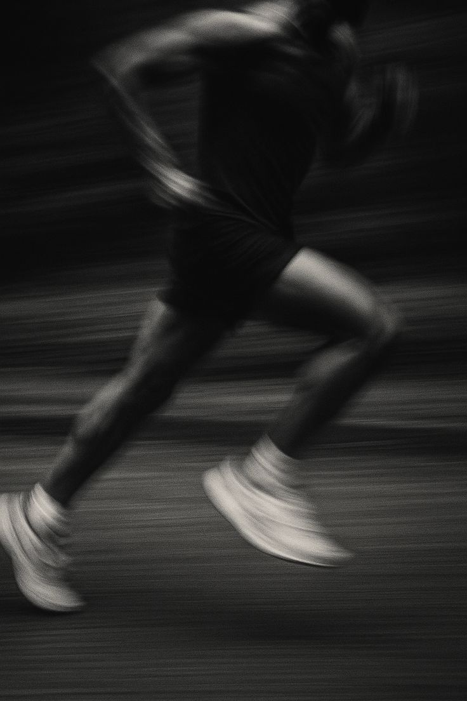

01 / FILOSOFÍA
¿Por qué el Atletismo?
El atletismo es mi deporte favorito porque en él he encontrado una forma diferente de verme a mí mismo. El running me ha hecho descubrir una versión de mí en la que puedo creer, una versión que sabe que "sí puedo". Mientras avanzo sin parar, siento que el resto de las ocupaciones de la vida se vuelven lo mismo: seguir sin rendirse. Es en el asfalto donde comprendo que cada zancada es una metáfora de mis metas académicas y personales; si puedo dominar mis piernas cuando piden parar, puedo dominar cualquier desafío que el futuro me presente.